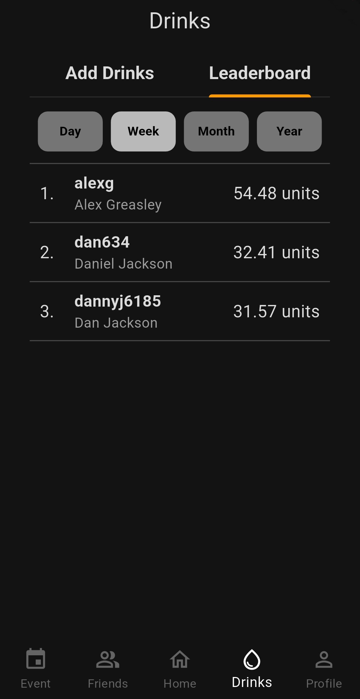
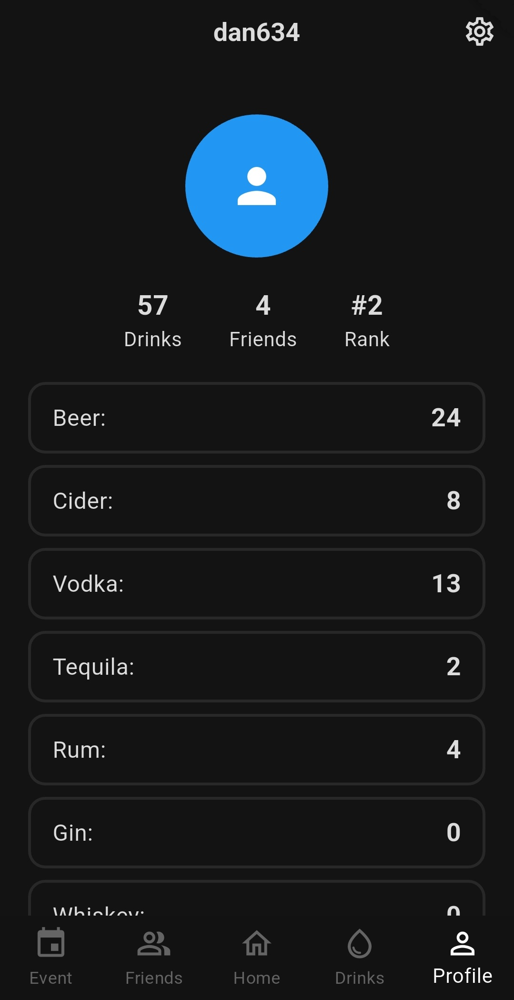
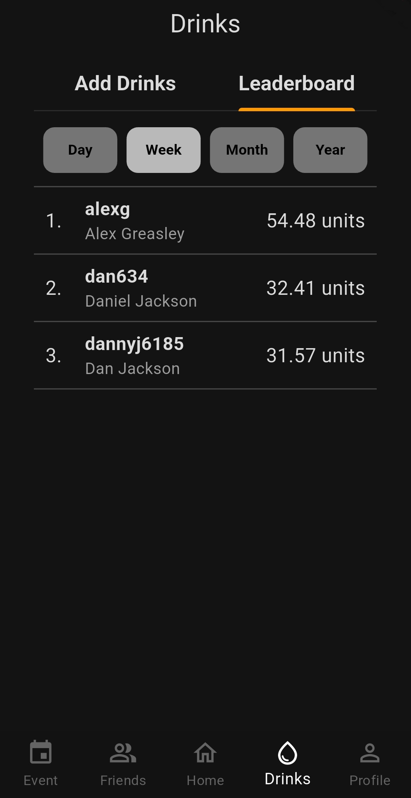
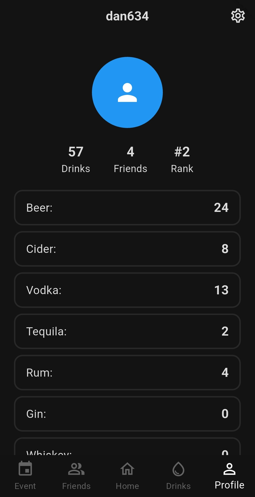

Dan Jackson
Dan Jackson
 



This app was made, so users could track how much they were drinking on nights out and compare, using a graph or measurements over longer time periods.
The user can add drinks from a built-in list, and it'll be added to their profile. The app also has fully functioning friend mechanics so users can send/accept friend requests.
This project was a collaboration between
Jed Leas
and myself. I primarily focused on creating and implementing the backend system, having to communicate about endpoints that were available for the front end.
The front-end was built by both of us, with the Event page being his creation.
The Back-end system is a RESTful API being hosted on an AWS EC2 instance. I used Flask to create the endpoints and to implement security through authentication.
To store data I used a MySQL database hosted on an Amazon RDS instance. The database schema was designed to optimize querying and reduce overall data stored.
Feel free to check out the app or code through the links at the top of the page.